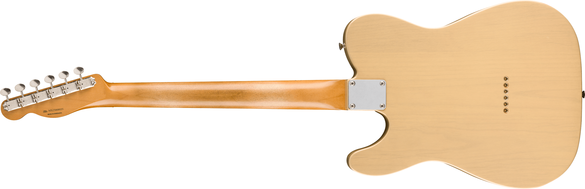
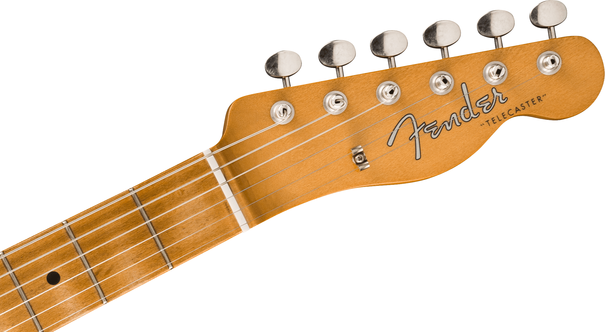
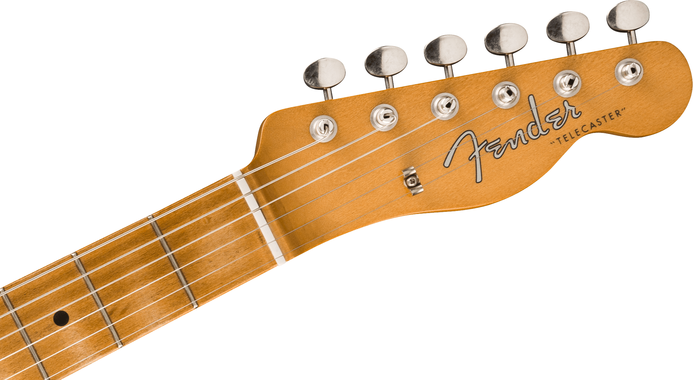

Limited Edition Vintera® II Road Worn® '60s Telecaster®
$25000
Hasta 6 cuotas sin interes
- Tipo de madera del cuerpo: Alamo.
- Acabado del cuerpo: Natural.
- Orientación de la mano: Diestro.
- Dos micrófonos Player Series Alnico 5 para tonos nítidos.
- Selector de micrófonos de 3 posiciones para variedad de sonidos.
- Puente fijo de 6-Saddle con Block Steel Saddle para estabilidad en la afinación.
Caracteristicas del Producto
| Marca | Fender |
| Modelo | Vintera Telecaster |
| Forma del cuerpo | Telecaster |
| Orientación de la mano | Diestro |
| Color | Natural |
| Tipo de madera del cuerpo | Alamo |
| Material del diapasón | Arce |
| Acabado del cuerpo | Brillante |
| Cantidad de Cuerdas | 6 Cuerdas |
| Largo de la Escala | 647,7 mm |
| Cantidad de Trastes | 21 |
| Tamaño de Trastes | Medium Jumbo |
| Forma de Mastil | Tipo C |
Imagenes del Producto
 

Descripcion
Disfrutá con esta guitarra Squier de la conexión con la música. Con este instrumento descubrirás nuevos acordes,
entonarás tus canciones y disfrutarás de la vida musical. Explorá, amplificá tu creatividad y desarrollá tu pasión.
Una forma para cada estilo musical
Esta Stratocaster es el máximo referente de las guitarras a lo largo de su historia. Cuenta con pastillas que incluyen selectores,
tonos y volumen máster. Tiene un sonido cálido, cristalino, percusivo y con mucha textura.
Su forma hace que sea el modelo que más se adapta al cuerpo humano, lo que otorga mayor versatilidad en su uso.
Eric Clapton es el representante de este instrumento, por lo que es ideal para estilos como el rock y el blues.
Material versátil
Su madera de álamo la convierte en uno de los modelos más accesibles y al mismo tiempo, ofrece facilidad para trabajar.